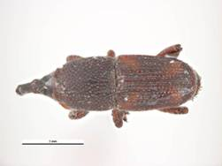
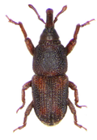
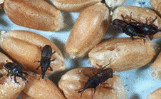

| Home |
| SUGARCANE |
PRIMARY STORAGE PEST |
INTERNAL FEEDERS |
| 1. Rice weevil |
| 2. Lesser grain borer |
| 3. Angoumois grain moth |
| 4. Pulse beetle |
| 5. Cigarette beetle |
| 6. Drug store beetle |
| 7. Tamarind Beetle |
| 8. Sweet Potato weevil |
| 9. Potato tuber moth |
| 10. Arecanut beetle |
EXTERNAL FEEDERS |
| 11. Red flour beetle |
| 12. Indian meal moth |
| 13. Fig moth or almond moth |
| 14. Rice moth |
| 15. Khapra beetle |
SECONDARY STORAGE PEST |
| 16. Saw toothed grain beetle |
| 17. Long headed flour beetle |
| 18. Flat grain beetle |
| 19. Grain lice |
| 20. Grain mite |
| Questions |
| Download Notes |
STORED GRAIN :: PRIMARY STORAGE PEST :: INTERNAL FEEDERS :: RICE WEEVIL
1. Rice weevil: Sitophilus oryzae (Curculionidae: Coleoptera)
Distribution and status
World-wide and is found practically throughout India. It is the most destructive pest of stored grain. The rice weevil may be found in the paddy fields as well.
Host range: Rice, sorghum, wheat, barley, maize
Bionomics
Full grown larva is 5 mm in length and plumpy, fleshy, legless creature. Reddish-brown beetle adult is 3 mm in length, with a cylindrical body and a long, slender, curved rostrum. Its elytra bear four light reddish or yellowish spots.

The rice weevil breeds from April to October and hibernates in winter as an adult inside cracks and crevices or under wheat bags in the godowns. During the active season, females lay about 400 eggs on the grain by making a depression and the hole is sealed with a gelatinous secretion. Eggs hatch in 6-7 days and the young larvae bore directly into grain, where they feed and grow to maturity. Then, they pupate inside the grain. The pupal stage lasts 6-14 days. On emergence, adult weevil cuts its way out of the grain and lives for about 4-5 months. At least generations are completed in a year.
Damage symptoms
Both the adults and the grubs cause damage. The developing larva lives and feeds inside the grain causing irregular holes of 1.5 mm diameter on grains of rice, sorghum, wheat, barley, maize before harvest and in storage. The weevils destroy more than what they eat.
|  |